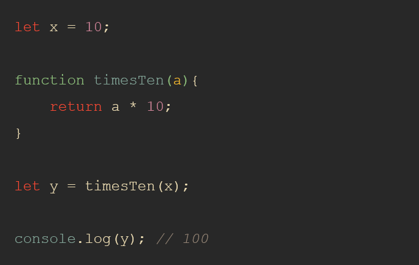

JavaScript is a scripting language that has a wide range of applications.
JavaScript was previously used mainly for making webpages interactive such
as form validation, animation, etc. Nowadays, JavaScript is also used in
many other areas such as server-side development, mobile app development
and so on.
The runtime environment is what makes JavaScript code work, and in a browser in consists of the JS engine, a lot of Web APIs, a callback queue and the event loop. The JS engine translates source code into machine code that allows a computer to perform specific tasks at the hardware level. Web APIs extend the JS language and push callback functions to the callback queue once actions are complete and data has been received The callback queue stores callback functions in order, ready to be executed. The event loop is constantly monitoring the call stack and the callback queue; if the call stack is empty it will move the callback function at the front of the queue to the call stack, scheduling it for execution.
JavaScript is a multi-paradigm prototype-based language, which uses
JavaScript Engine such as Chrome’s V8 engine Firefox SpiderMonkey engine
and etc. They convert the high level code into machine-readable code which
lets computer to perform some specific tasks.

Let’s start with the following example:

In this example: First, declare the x variable and initialize its value
with 10. Second, declare the timesTen() function that accepts an argument
and returns a value that is the result of multiplication of the argument
with 10. Third, call the timesTen() function with the argument as the
value of the x variable and store result in the variable y. Finally,
output the variable y to the Console. Behind the scene, JavaScript does
many things. in this tutorial, you will focus on execution contexts. When
the JavaScript engine executes the JavaScript code, it creates execution
contexts. Each execution context has two phases: the creation phase and
the execution phase.

After the creation phase, the global execution context moves to the execution phase.
During the execution phase, the JavaScript engine executes the code line by line, assigns the values to variables, and executes the function calls.

For each function call, the JavaScript engine creates a new function execution context. The function execution context is similar to the global execution context. But instead of creating the global object, the JavaScript engine creates the arguments object that is a reference to all the parameters of the function:

In our example, the function execution context creates the arguments object that references all parameters passed into the function, sets this value to the global object, and initializes the a parameter to undefined. During the execution phase of the function execution context, the JavaScript engine assigns 10 to the parameter a and returns the result (100) to the global execution context:

To keep track of all the execution contexts, including the global execution context and function execution contexts, the JavaScript engine uses the call stack, which you will learn in the next tutorial. In this tutorial, you have learned about the JavaScript execution contexts, including the global execution context and function execution contexts.